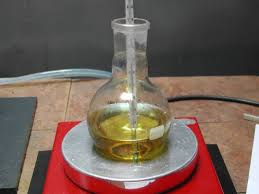
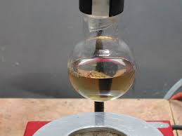
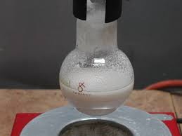
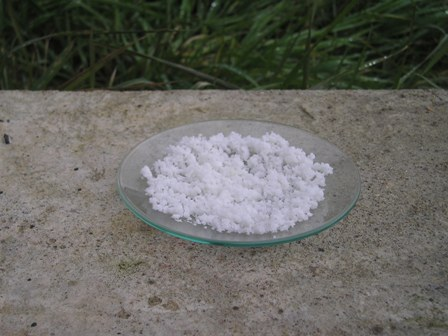

Il tema sui catalizzatori, lanciato dall'amico Marco sul suo blog per ospitare il prossimo 27esimo Carnevale della Chimica, mi ha invogliato a fare la sintesi che presento.
La reazione (condensazione benzoinica) è una preparazione di chimica organica nota e facilmente accessibile, semplice da realizzare (anche se non lo è dal punto di vista del meccanismo) che ho voluto rifare anche in onore di Nikolai Zinin, ricordato nel post precedente.
Essa permette di accoppiare due molecole di benzaldeide C6H5-CHO, formando un nuovo legame C-C, e porta alla produzione di un alfa-idrossi chetone C6H5-CO-CH(OH)-C6H5, il benzoino.
La reazione originale di Zinin è catalizzata dallo ione cianuro CN- secondo il meccanismo seguente, visibile per esempio a questo link (non voglio appesantire inutilmente, dato che io mi riservo come il solito la parte strettamente sperimentale).
Non essendoci eliminazione di acqua (o altre piccole molecole) il termine "condensazione" è improprio, ma lascio questo nome per motivi storici.
Con mio rammarico mi spiace non poter ripetere esattamente il metodo originale, che comporterebbe l'uso di KCN... purtroppo ciò non è proprio possibile per ovvi motivi.
Ai tempi del nostro Nikolai non si parlava certo di green-chemistry, però... è altrettanto interessante sapere che si può sostituire questo poco amichevole catalizzatore nientemeno che con una vitamina! Eccola:

Nel 1960 si è scoperto che la vitamina B1 (tiamina, sotto forma di cloridrato) può funzionare in maniera del tutto analoga agli ioni CN-, sfruttando il carbanione che si viene a formare in ambiente basico per eliminazione dell'idrogeno evidenziato nel gruppo tiazolico; tale carbanione nucleofilo può attaccare una molecola di benzaldeide, che poi ne addiziona un'altra secondo il meccanismo visto sopra (dimerizzazione).
Tutto il carrozzone catalitico è poi anche un buon gruppo uscente, ristabilendo alla fine il gruppo carbonilico e la tiamina, che viene ripristinata anch'essa.
Su questo composto, importante catalizzatore anche dal punto di vista biologico, ci sarebbe da dire... ma per praticità mi limito ai consueti rimandi ad altre sedi per eventuali vitaminici approfondimenti.
Ho seguito una classica procedura "scolastica" (questo link, ma la preparazione è reperibile identica anche altrove)
Mi sento in colpa per le foto, fatte di corsa in un oscuro, freddo e umido lab con quel tempo pessimo che ci ha accompagnato per mesi... chiedo un po' di indugenza da parte dei lettori!
Materiale occorrente
- benzaldeide
- tiamina cloridrato
- sodio idrossido
- etanolo
- vetreria opportuna

Porre 2,6 g di tiamina cloridrato in un palloncino da 250 ml, sciogliendola in 8 ml di acqua e 30 ml di etanolo.Raffreddare in ghiaccio e aggiungere goccia a goccia 5 ml di soluzione di NaOH 3 M (1,2 g in 10 ml di acqua), mescolando e senza far salire la temperatura oltre i 20°.
Durante l'aggiunta la tiamina viene salificata e deprotonata e la soluzione si colora in giallo.

Aggiungere a questo punto 15 ml di benzaldeide e porre in bagno d'acqua a 60°C per un'ora e mezza circa, controllando sempre la temperatura.

Alla fine raffreddando in ghiaccio il pallone il benzoino formatosi si separa come massa bianca dalla soluzione.Filtrare su buchner e lavare accuratamente con poca miscela acqua/etanolo 1:1 e poi con acqua pura e lasciar asciugare all'aria.

Il benzoino si presenta come una polvere bianca/leggermente beige microcristallina, pochissimo solubile in acqua, di leggerissimo odore di mandorla. P.f. 137°
(La vecchia e ormai desueta bevanda detta orzata viene aromatizzata col "benzoino" estratto dalla resina della pianta Stirax benzoin, quindi non è da confondere la sostanza chimica trattata qui ed il benzoino naturale, parente ma di origine e composizione diverse).
L'uso della tiamina come catalizzatore (o molecole con analogo anello tiazolico) è comodo e permette la dimerizzazione catalizzata di molte aldeidi, sia aromatiche che alifatiche, operando in ambiente basico per esempio con trietilammina in etanolo.
Dal benzoino (e derivati) e dalle aciloine (R alifatico al posto del fenile) per riduzione si ottengono i rispettivi dioli (o anche si arriva a idrocarburi: per esempio lo stilbene, C6H5-CH=CH-C6H5) oppure per ossidazione si formano i dichetoni, come il benzile, C6H5-CO-CO-C6H5, dal quale poi si può ottenere... e poi da questo...
La chimica organica, oltre a essere bella è come le ciliegie: una (molecola) tira l'altra, in una catena infinita.
Chissà con chi mi verrà in mente di "sposare" questo benzoino?
E che "figli" genererà?
Per ora non lo so nemmeno io; per ora è "lui" ad essere stato generato... da una benzaldeide stavolta ermafrodita, e con la tiamina nella parte di Cupido!
2 commenti